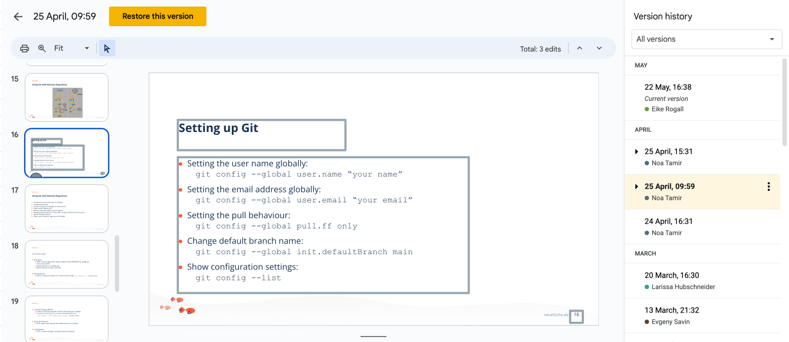
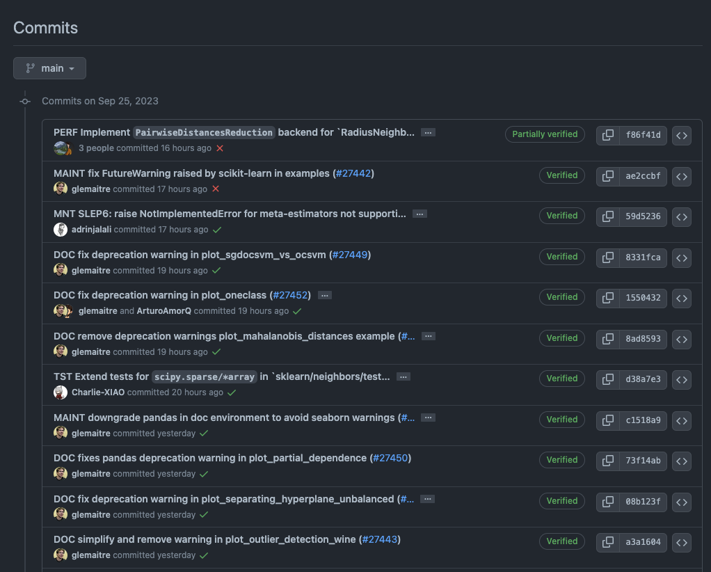
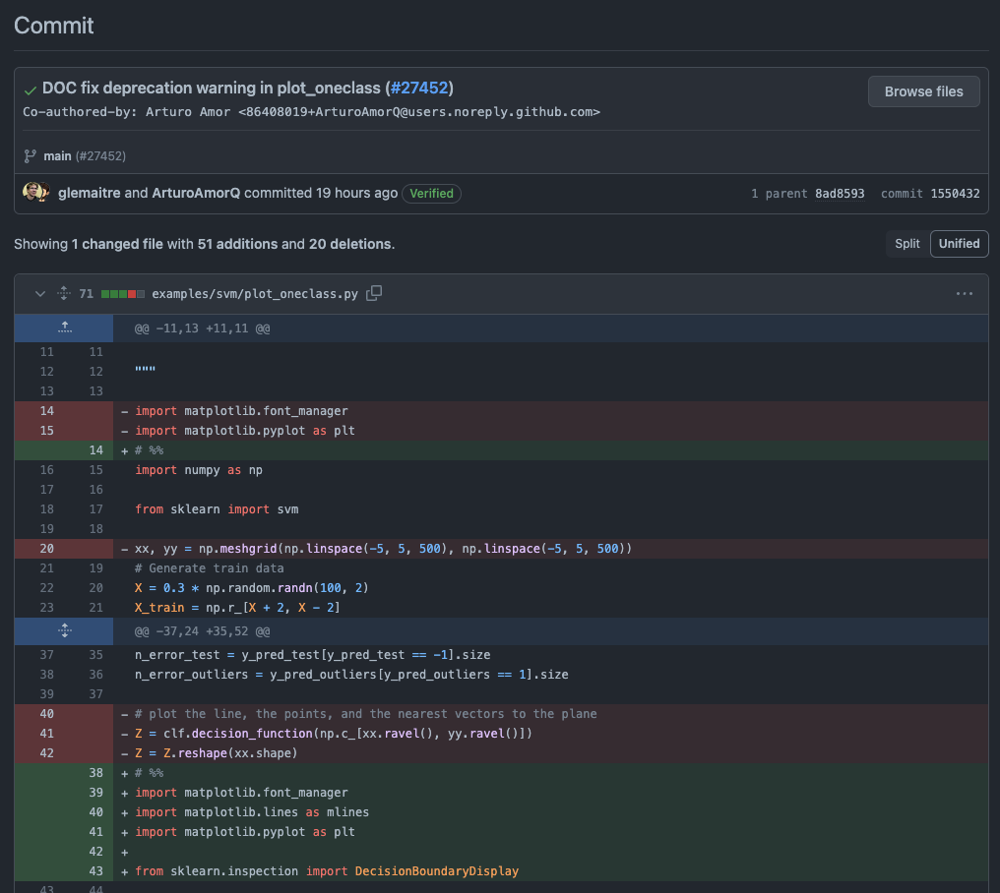

Let’s talk about git..#
What is git?#
Open-source project
Distributed Version Control System
can be used completely offline
Who of you has done that?#

Who of you has used built in version control of a tool already?#

Version Control with git#

Version Control with git#

The Three Stages#
modified: file was changed but not committed yet
staged: file was marked in its current version to go into the next commit
committed: file/data is stored in local database (.git directory)
The Workflow#
Modify files in working tree/directory
Selectively stage those changes that should be part of the next commit
Commit the files as they are in the staging area and store that snapshot to your git repository
The Status of your Files#
Using Git Locally#
In your terminal: create a new folder and navigate into it
Turn it into a git repository with
git initand create a file (can be any file type)Explore the different stages and commands:
Track a file
Stage and commit a file
Modify a commited file and commit it again
Stage a file and unstage it again
Create a new file, track it and untrack it again
Between every command run
git status. It will not only show you the effects of your command but also suggest all the commands you will need to unstage or untrack a file.
What is GitHub?#
Collaborate effectively online based on git (see below)
Open-source community and contribution
Follow others, find and star interesting repositories
Show others what you did, invite to collaborate and collaborate yourself
Demonstrate that you are actively working on projects
Learn from code If you want to learn more about git & GitHub, you can watch this video.
Git Workflows with Larissa#
from IPython.display import YouTubeVideo
video = YouTubeVideo("EVe3UBGEc_s")
display(video)
Using Git with Remote Repository#
Using Git with Remote Repository#
Using Git with Remote Repository#
Using Git with Remote Repository#
Setting up Git#
Setting the user name globally:
git config --global user.name “your name”Setting the email address globally:
git config --global user.email “your email”Setting the pull behaviour:
git config --global pull.ff onlyChange default branch name:
git config --global init.defaultBranch mainShow configuration settings:
git config --list
Using Git with Remote Repository#
Create and clone new repo on Github
Create new branch
Commit and push changes to new branch
Open a pull request (pr)
Review code and approve pull request
Merge branch into main / Deal with merge conflicts (if one occurs)
Synchronize branches
Open a pull request, approve and merge
Let’s work in pairs.#
New Repo
ONE: creates new public repo on github with README.md, .gitignore, and Licence (MIT)
Invites partner as collaborator
BOTH: Clone it to your machine
New Branches
BOTH: create and switch to a new branch locally:
git switch -c <new_branch>
Commit Changes (BOTH)
Create a new file and add, commit and push your change
To push a local branch to a new remote branch use:
git push --set-upstream origin <branch_name>
Open Pull Request
ONE: opens pull request and adds partner as reviewer
Code Review
TWO: reviews changes and approves pull request
Merge Branch
ONE: merges approved pull request into main branch and deletes remote branch
Syncing Branches Locally
Now branch of TWO will be behind main branch
switch to main branch:
git switch mainpull changes:
git pullswitch to your branch:
git switch <branch_name>merge new changes from main branch in your branch:
git merge mainadd commit message (vim will open automatically) if necessary and push again
Second pull request
TWO: opens pull request for his branch
ONE: reviews changes and approves pull request
TWO: merges approved pull request into main branch and deletes remote branch
Last but not least..
BOTH: switch to main branch locally and pull changes
Resources#
Git Basics - https://www.youtube.com/watch?v=_OZVJpLHUaI
Reference Manual - https://www.git-scm.com/docs
Pro Git Book - https://www.git-scm.com/book/en/v2